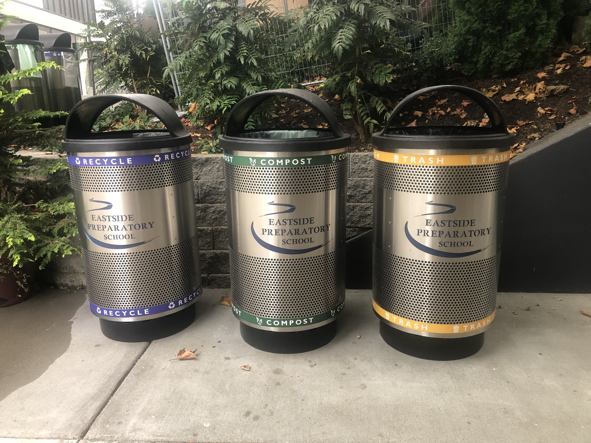

HELP YOUR COMMUNITY
STAYING CLEAN
We have the privilege of learning in a beautiful campus, so let's do our best to keep it clean!

| Lunch Cleanup | Clean Habits |
| This year we have started the advisory-led lunch cleanup operations again, which means advisories will take turns finishing lunch early and working to clean up the lunch areas as much as possible. *Note that students with seminars that end late do not need to participate on Wednesdays. | In order to keep our campus clean, students need to adopt the habit of picking up after themselves and others, and not just during lunch. Do your best to return plates to the kitchen and throw garbage away when you see it, even if you aren't officially assigned to the job. |